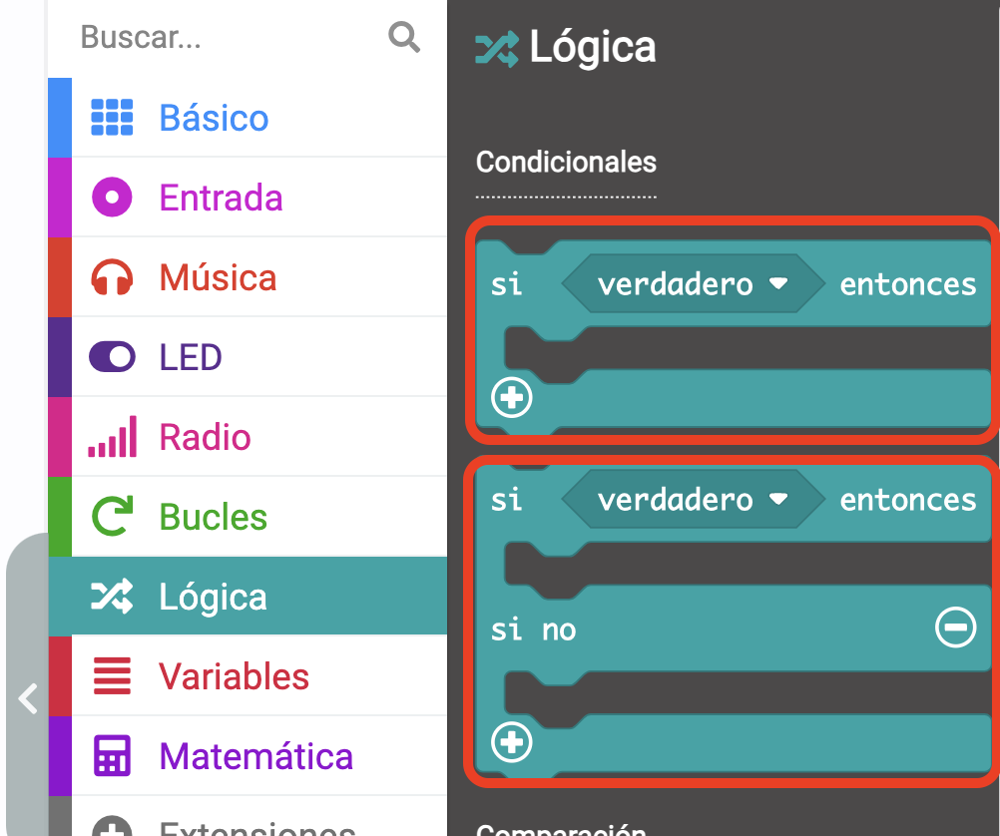
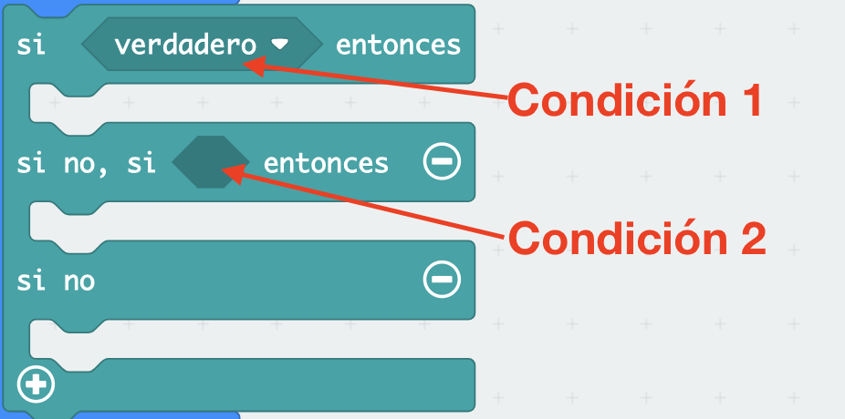
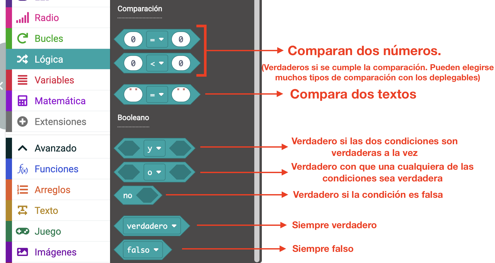
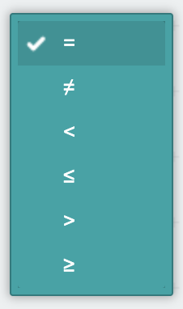
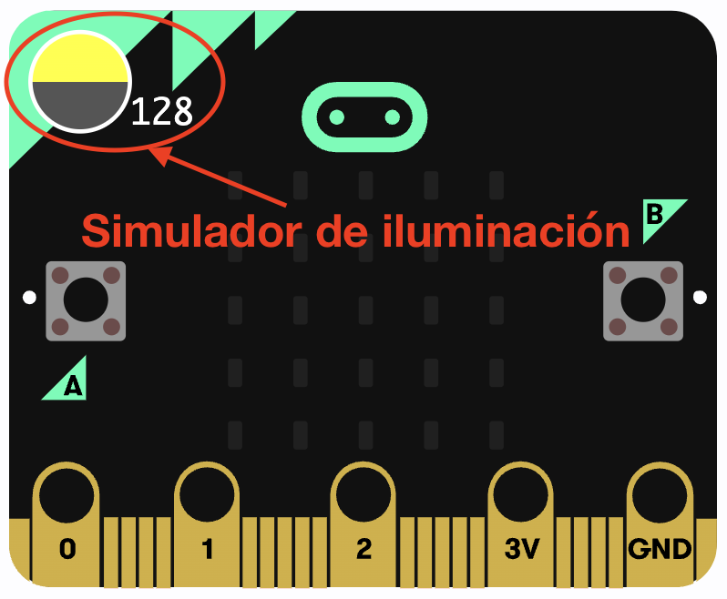
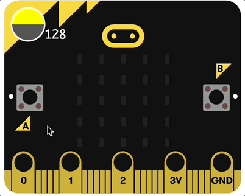
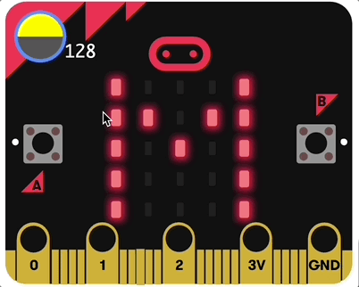

Prácticas
Un sensor de luz es un componente electrónico que capta el nivel de luminosidad que existe en su entorno para así medir el nivel de cantidad de luz emitida por un objeto.
Uno de los elementos electrónico más comunes para detectar luz son las resistencias LDR.
Una de las aplicaciones más comunes son las farolas, las cuales pueden estar controladas por un sensor de luz, encendiéndose cuando la luminosidad disminuye (cuando llega la noche) y apagándose cuando llega el día, para ahorrar energía.
Micro:bit utiliza los mismos LEDs de la matriz para funcionar como sensores de luz. El valor de la luz registrada lo tienes disponible en un bloque de MakeCode llamado nivel de luz, que se encuentra, como todos los sensores, en la categoría Entrada.
A diferencia del sensor de temperatura, en el que es muy útil saber el valor numérico de la temperatura, el valor concreto del nivel de luz no nos sirve de mucho (además, el sensor no es demasiado preciso). Lo que nos interesará saber de este sensor es si hay mucha o poca luz, por lo que tendremos que preguntar si su valor es alto o bajo o mediano, etc.
Para preguntar cosas en programación, utilizamos dos bloques parecidos: el bloque "si verdadero entonces" y el bloque "si verdadero entonces - si no". Los puedes encontrar en MakeCode en la categoría Lógica.
Estos bloques tienen una condición, que es la forma hexagonal donde pone "verdadero". Esa condición es algo que solo puede tomar dos valores: verdadero o falso:
- Si es verdadero, se ejecutan todos los bloques que hayamos metido donde pone si verdadero entonces.
- Si es falso, en el caso del primer bloque no se ejecuta nada y en el caso del segundo se ejecuta lo que hayamos metido donde pone si no.
Si tienes que comparar varias cosas, puedes usar el botón (+) de estos bloques para preguntar varias cosas una detrás de otra. Si pulsas el botón (+) del bloque si verdadero entonces obtendrás el bloquesi verdadero entonces - si no. Si vuelves a pulsar el botón en este bloque, se añadirá otra condición "si", como puedes ver aquí:
Este bloque funcionaría así:
- Si se cumple la condición 1, solo se ejecutarán los bloques que se metan en el primer hueco.
- Si no se cumple la condición 1, se pregunta por la 2:
- Si se cumple la condición 2, solo se ejecutarán los bloques que se metan en el segundo hueco.
- Si no se cumple la condición 2, sólo se ejecutará los bloques que se metan en el tercer hueco.
Fíjate que sólo se pregunta por la condición 2 si no se cumple la 1. Si la 1 es verdadera, ya no se pregunta nada más.
Puedes usar diferentes bloques de tipo condición, pero los más usados son los bloques comparadores y los booleanos. Los puedes encontrar en la categoría Lógica y se muestran aquí, indicándose cuándo devuelven el valor "verdadero" (o "falso"):

Si despliegas la flecha de cualquier bloque de comparación, puedes encontrar cualquier tipo de comparación que necesites:

Vamos a practicar con el bloque de nivel de luz y con estos bloques de comparación.
Práctica 1 - Nivel de luz sobre la placa
Para aprender a usar el bloque nivel de luz y a probar su funcionamiento, vamos a hacer una práctica muy simple que consiste en mostrar en la matriz de LEDs el valor numérico del nivel de luz medido por la placa.
Cuando utilices la placa real, podrás modificar el nivel de luz tapando la matriz de luz o iluminándola por ejemplo con tu móvil, pero para simular la luz que le da a la placa virtual tienes un control que aparece si utilizas en tu código el bloque nivel de luz y que puedes arrastrar para ir variando:
En esta práctica tienes que comprobar que el valor que sale en pantalla es el mismo que aparece en el deslizador cuando lo modificas tú a mano. Para que la placa esté todo el tiempo midiendo la luz, el código hay que meterlo en el bloque para siempre.
Si lo haces bien, tiene que funcionar así:

Te dejo el código completo de esta práctica por si tienes dificultades haciéndola:

Práctica 2 - Comparar números
Para esta práctica vamos a tomar el nivel de luminosidad y, según sea su valor, vamos a mostrar en la pantalla lo siguiente:
- Poca luz (nivel menor de 55): letra "B" (de "bajo")
- Mucha luz (nivel mayor de 200): letra "A" (de "alto")
- Valores intermedios: letra "M" (de "mediano")
Para ello, además del bloque nivel de luz, tendremos que utilizar los bloques para preguntar y los bloques comparadores. A ver si eres capaz de hacerlo por tus propios medios. Si lo has hecho bien, debería funcionar así:
Aquí tienes el código completo por si no has sido capaz de hacerlo: